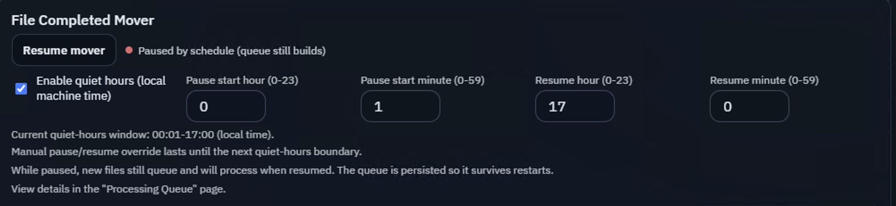
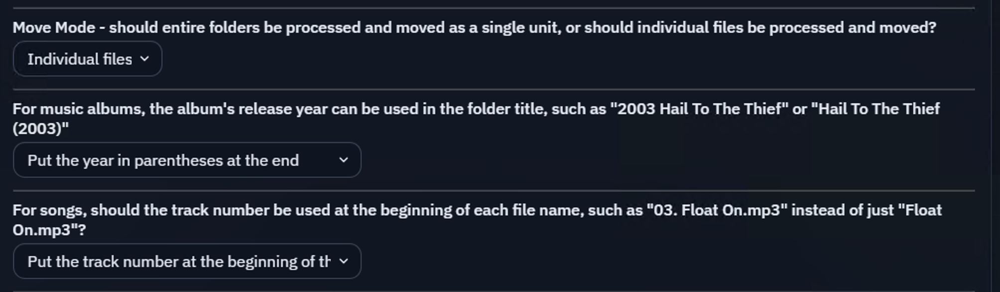
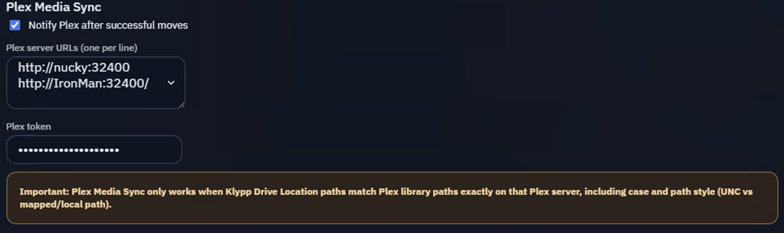
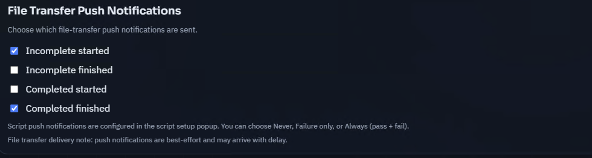
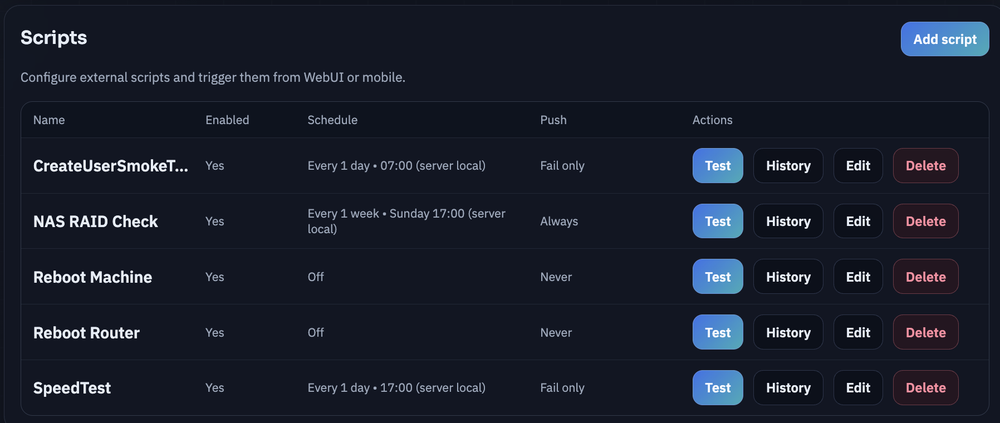
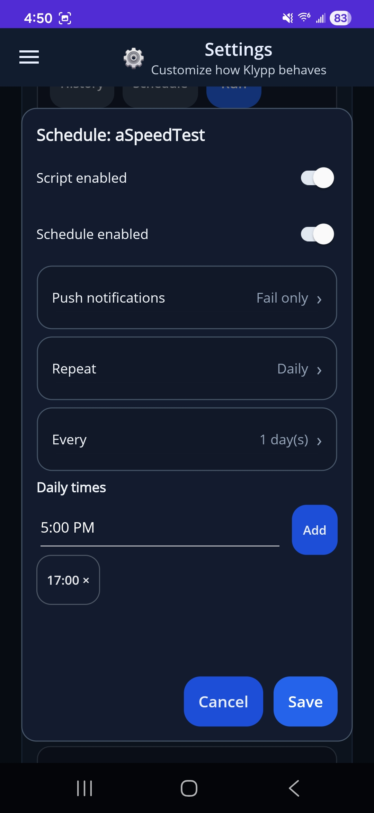
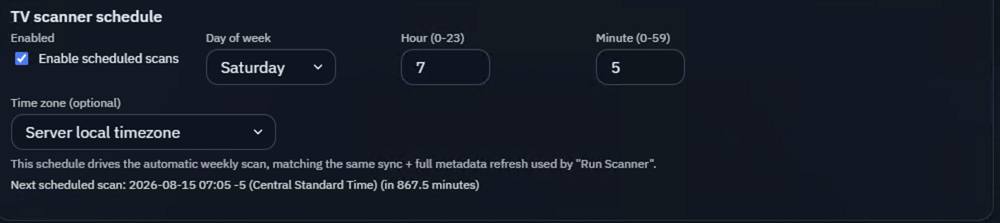
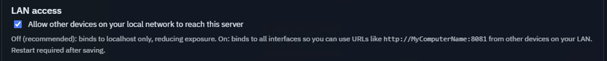
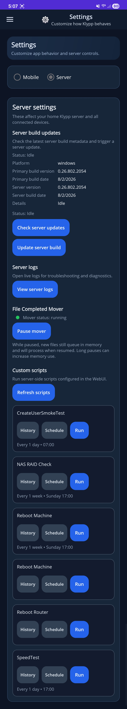
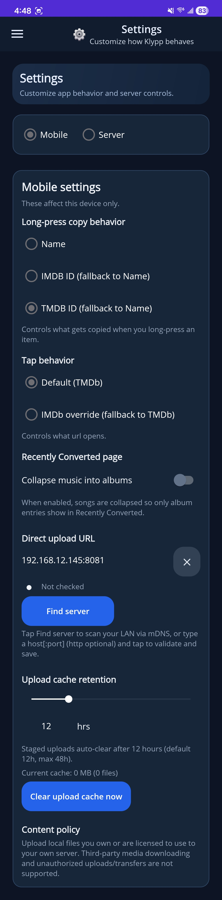

Server Settings overview
Use this guide to understand the options that control how your Klypp Server moves, organizes, and synchronizes media. Mobile controls and app settings are shown at the end of this page.
File Completed Mover and quiet hours
The File Completed Mover handles media after it appears in App Completed Downloads. It checks each file against your Klypp rules and moves it to the correct final destination.
You can pause the mover manually or set quiet hours so it only processes files during the times you choose. While the mover is paused, new files continue to be added to the Processing Queue; they are not lost. When processing resumes, Klypp continues working through the saved queue.
Quiet hours are especially useful when your media is stored on a NAS. Pausing file moves during the day can help prevent routine downloads from waking the NAS repeatedly. Klypp can then process queued files during your chosen window, allowing the NAS drives to remain asleep longer and reducing unnecessary drive activity.
Manual pause or resume changes remain active until the next quiet-hours boundary. The Processing Queue is persisted, so queued work survives a Klypp Server restart.
Resume mover is also available from the mobile app, so you can start processing queued media while you are away from home instead of waiting for the next scheduled resume time.

Media organization options
These settings control how Klypp organizes media after processing.
- Move Mode lets you choose whether Klypp processes media as individual files or moves an entire folder as one unit. For most movie and TV libraries, choose Individual files so Klypp moves only the movie or TV episode into its final library location.
- Music album naming lets you include an album’s release year in the album-folder name,
either at the beginning, such as
2003 Hail To The Thief, or at the end, such asHail To The Thief (2003). - Track-number naming lets you add the track number to the beginning of each music file,
such as
03. Float On.mp3, rather than using only the song title.

Plex Media Sync
Plex Media Sync is useful for large libraries where Plex does not reliably detect new media on its own. Instead of scheduling Plex to rescan an entire library at regular intervals, Klypp can notify Plex after a successful move and tell it exactly which movie or TV-show folder changed. This helps new media appear sooner while avoiding unnecessary full-library scans.
Enable Notify Plex after successful moves, then enter one or more Plex server URLs and your Plex token. Klypp Drive Location paths must exactly match the library paths used by Plex on that server, including capitalization and path style.

File Transfer Push Notifications
Choose which events send push notifications to your mobile device: incomplete download started, incomplete download finished, completed download started, and completed download finished. Push delivery is best-effort and may arrive with a delay. Script notifications are configured per script.

Scripts
Scripts are fully user-defined. You can add any command or script that your Klypp Server machine can run from the command line, such as a PowerShell script, shell script, maintenance command, or a command that starts another program. What you automate is entirely up to you and the permissions available to the Klypp Server service.
Each script can have a name, enabled state, optional schedule, and push-notification preference. You can test a script, view its history, edit it, or delete it from Klypp Server.
Custom scripts can be run and managed from both Klypp Server and the mobile app. From mobile, you can trigger a script remotely and update the schedule for when it runs on your Klypp Server.


TV scanner schedule
Use the TV scanner schedule to refresh your TV-show data automatically, including episode information and other metadata. Choose the day, time, and optional time zone for Klypp Server to run its weekly scan. The scheduled scan uses the same synchronization and full metadata-refresh behavior as Run Scanner. Restart Klypp Server after saving changes to apply the schedule.

LAN access and Direct Upload URL
By default, Klypp Server binds only to localhost, which limits access to the machine running
the server. Enable LAN access if other devices on your local network need to reach Klypp Server through its
Direct Upload URL, such as http://YourComputerName:8081. Restart Klypp Server after changing
this setting.

Mobile app settings
The mobile app includes two settings views: Server Settings controls your home Klypp Server, while Mobile Settings controls this phone’s Klypp app and its connection to the server.

